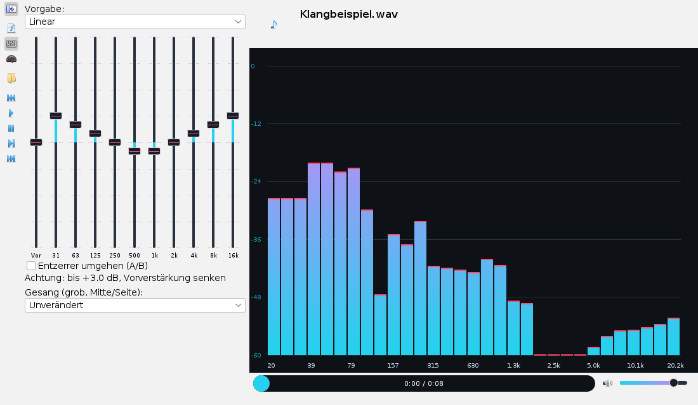
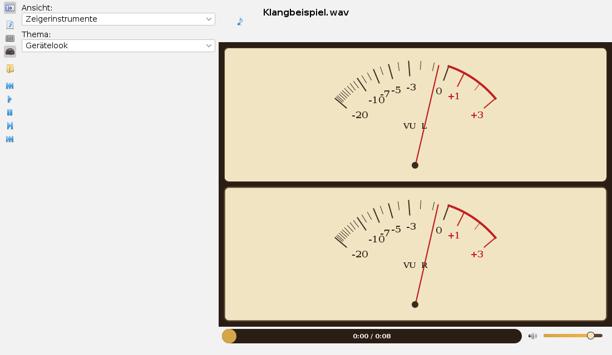
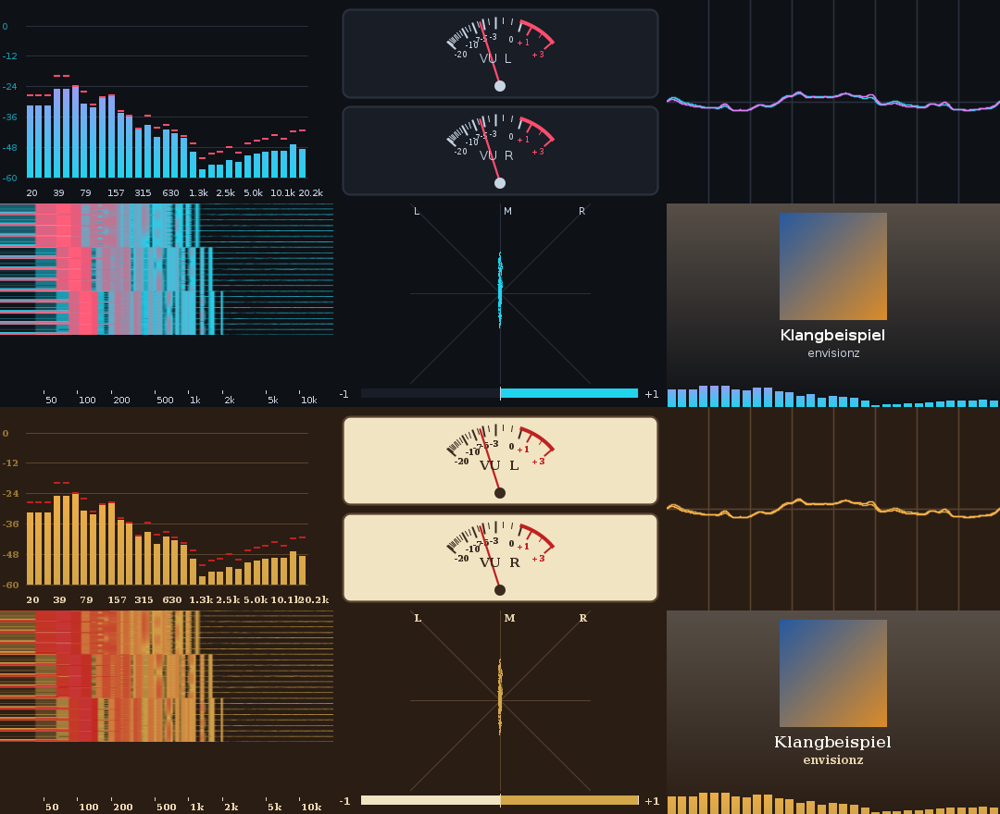
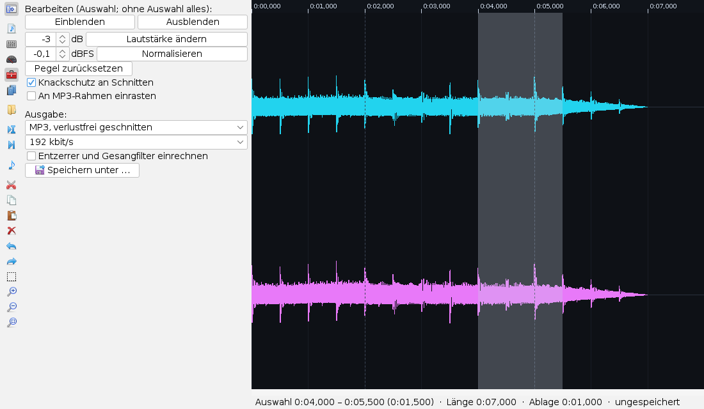
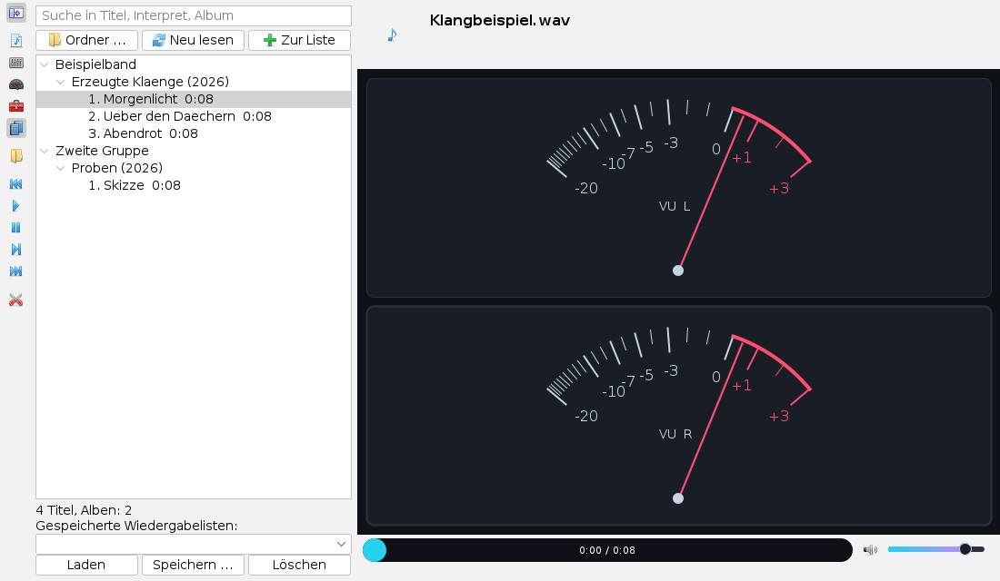

Die Audio-App bedienen
Bedienseite, Stand 04.10.2026. Wie man Titel öffnet und abspielt, den Entzerrer und den Gesangfilter einstellt, Anzeigen und Themen wechselt, im Editor schneidet und die Bibliothek nutzt. Die Bilder sind Bildschirmfotos der App mit einem erzeugten Klangbeispiel.
Das Fenster
Die App öffnet man im Menü Anwendungen mit Audio abspielen und schneiden oder mit Alt+L. Links liegt die senkrechte Leiste mit den Karten und den Knöpfen der Wiedergabe, rechts der Titel, die große Anzeige, die Zeitleiste und die Lautstärke.

Die Knöpfe der Leiste, von oben: Leiste ein- und ausblenden, die Karten Wiedergabeliste, Entzerrer und Ansicht, dann Öffnen, voriger Titel, Abspielen, Pause, Stopp, nächster Titel und die Schere, die in den Editor wechselt. Jeder Knopf nennt seine Aufgabe, wenn die Maus darauf ruht.
Titel öffnen und abspielen
- Öffnen wählt eine oder mehrere Dateien (MP3, MP2, WAV, AAC/M4A, FLAC). Sie kommen ans Ende der Wiedergabeliste, der erste davon spielt sofort.
- In der Karte Wiedergabeliste spielt ein Doppelklick einen Titel; über das Kontextmenü nimmt man ihn aus der Liste.
- Ein Klick in die Zeitleiste springt an die Stelle, Ziehen spult. Rechts davon stellt der Regler die Lautstärke.
- Kopfzeile: Titel, Interpret, Album und Jahr aus den ID3-Kennzeichnungen, links das Cover. Ohne Kennzeichnung steht der Dateiname da.
Entzerrer und Gesangfilter
Die Karte Entzerrer hat zehn Regler für die Bänder von 31 Hz bis 16 kHz und links davon die Vorverstärkung, alle in Schritten von 0,1 dB bis ±12 dB. Die Füllung jedes Reglers zeigt den Abstand von 0 dB.
- Vorgabe setzt alle Bänder auf einmal (Linear stellt alles zurück).
- Hebt man Bänder an, kann das Signal übersteuern. Die Zeile unter den Reglern nennt dann die höchste Anhebung; die Vorverstärkung um diesen Betrag senken.
- Entzerrer umgehen (A/B) schaltet weich auf das unveränderte Signal zum Vergleich.
- Gesang und Schlagzeug: Gesang entfernen und herausheben gibt es zweimal. Die einfache Fassung (Mitte/Seite) löscht, was in der Mitte und im Stimmband liegt; ein ganz seitlich gemischtes Instrument bleibt dabei mit −3 dB. Die Fassung mit Masken entscheidet für jeden Frequenzpunkt einzeln, ob er mittig und tonal ist, und trennt deutlich schärfer, kostet aber Rechenzeit und gut 0,1 s Vorlauf. Dazu Schlagzeug herausheben und ohne Schlagzeug (Töne gegen Schläge). Alles wirkt nur bei Stereo voll; Hall und Chor des Gesangs bleiben in der Begleitung.
Alle Einstellungen gelten für jeden folgenden Titel und bleiben über die Sitzung erhalten.
Anzeigen und Themen
In der Karte Ansicht wählt man die Anzeige und das Thema.


| Anzeige | Was man sieht |
|---|---|
| Spektrum | Pegel in 31 Terzbändern, 0 dB = Sinus mit voller Aussteuerung; die Striche halten die Spitze kurz fest. |
| Zeigerinstrumente | VU-Meter je Kanal, 0 VU = −18 dBFS, träge wie ein echtes Instrument. |
| Oszilloskop | Wellenform beider Kanäle, ruhig stehend durch Triggern auf den Nulldurchgang. |
| Wasserfall | Spektrum über der Zeit, neu oben; hell heißt laut. Töne erscheinen als senkrechte Linien, Schläge als waagerechte. |
| Goniometer | Stereobild: ein senkrechter Strich ist Mono, Breite heißt Stereo, ein waagerechter Strich gegenphasig. Der Balken darunter zeigt die Korrelation; ein Ausschlag nach links (negativ) warnt vor Auslöschung bei Mono-Wiedergabe. |
| Cover | Das Cover groß mit Titel und Interpret, dazu ein schmales Spektrum. |
Schneiden
Die Schere in der Leiste schaltet auf den Editor um und lädt den aktuellen Titel; das Notensymbol an ihrer Stelle führt zurück zum Abspielen. Beim ersten Mal wird die Datei einmal ganz gelesen, damit die Wellenform jede Zoomstufe sofort zeichnen kann.

- Wählen: in der Wellenform ziehen. Ein Klick setzt die Marke; Umschalt+Klick erweitert die Auswahl.
- Zoomen: Mausrad um die Mausstelle, die Lupen in der Leiste oder
+und−; die dritte Lupe passt die Auswahl oder die ganze Datei ein. Verschieben mit Umschalt+Mausrad oder der Bildlaufleiste. Ab etwa 256 Abtastwerten je Bildpunkt zeigt die Ansicht die echten Abtastwerte. - Schneiden: Ausschneiden, Kopieren, Einfügen (an der Marke; eine Auswahl wird ersetzt) und Löschen. Rückgängig und Wiederholen reichen 200 Schritte zurück.
- Anhören: „Auswahl abspielen" spielt die Auswahl, ohne Auswahl ab der Marke; die Leertaste schaltet zwischen Spielen und Stopp. Ein roter Strich zeigt, was gerade erklingt.
Die Datei selbst bleibt unverändert: der Editor merkt sich nur eine Liste der Schnitte. Die Infozeile zeigt Auswahl, neue Länge und den Inhalt der Ablage.
Bearbeiten und speichern
Die Karte Bearbeiten und Ausgabe (Werkzeugkasten in der Leiste) öffnet sich mit dem Editor. Die Pegelwerkzeuge wirken auf die Auswahl, ohne Auswahl auf alles:
- Einblenden und Ausblenden über die Auswahl, Lautstärke ändern um einen Betrag in dB, Normalisieren auf eine Spitze in dBFS (Vorgabe −0,1), Pegel zurücksetzen. Blenden und Pegel wandern bei jedem späteren Schnitt mit und lassen sich rückgängig machen; die Wellenform zeigt sie sofort.
- Knackschutz an Schnitten: an jeder Naht wird knapp 3 ms aus- und wieder eingeblendet, so knackt ein harter Schnitt nicht.
- An MP3-Rahmen einrasten: Auswahl und Marke springen auf Vielfache von 1152 Werten (bei 44,1 kHz gut 26 ms). Dann bleibt beim verlustfreien Schnitt fast jeder Rahmen bitgenau.
Unter Ausgabe wählt man das Format und schreibt mit Speichern unter … eine neue Datei; die Quelldatei wird nie überschrieben.
| Format | Was geschieht |
|---|---|
| MP3, verlustfrei geschnitten | Die Rahmen des Originals werden unverändert übernommen. Nur rund um jede Naht und in Blenden kodiert der eigene Kodierer kurze Brücken neu. Geht nur bei MP3-Quellen (MPEG-1 Layer III) und ohne eingerechnete Effekte; sonst wird ganz neu kodiert, und die Statuszeile sagt es. |
| MP3, neu kodiert | Mit dem eigenen Kodierer in der gewählten Bitrate oder mit variabler Bitrate (VBR, Qualität 2, 4 oder 6): jeder Rahmen bekommt so viele Bits, wie für unhörbares Rauschen nötig sind. VBR-Dateien tragen einen Xing-Kopf, damit andere Spieler Dauer und Sprungziele richtig anzeigen. |
| WAV, 16 Bit | Unkomprimiert. |
| EVAS, verlustfrei | Das eigene verlustfreie Format: jeder 16-Bit-Wert kommt unverändert zurück, bei Musik meist in rund der halben WAV-Größe. |
Entzerrer und Gesangfilter einrechnen schreibt die Einstellungen des Abspielers fest in die Datei. Nach dem Speichern nennt die Karte das Ergebnis, beim verlustfreien Schnitt etwa „6135 von 6443 Rahmen unverändert übernommen, 3 Brücken neu kodiert“.
Bibliothek
Die Karte Bibliothek (Bücher in der Leiste) verwaltet die Musiksammlung in einer kleinen Datenbank.

- Ordner … nimmt einen Ordner samt Unterordnern auf. Gelesen werden die Kennzeichnungen (ID3) und die Dauer, ohne die Musik zu dekodieren. Neu lesen durchsucht alle aufgenommenen Ordner erneut: neue und geänderte Dateien kommen hinzu, verschwundene fallen heraus, unveränderte werden übersprungen.
- Der Baum ordnet nach Interpret, Album (mit Jahr) und Spur. Das Suchfeld filtert beim Tippen nach Titel, Interpret, Album oder Dateipfad.
- Doppelklick auf einen Titel, ein Album oder einen Interpreten hängt alles darunter an die Wiedergabeliste und spielt es; Zur Liste hängt nur an.
- Gespeicherte Wiedergabelisten: Speichern … fragt nach einem Namen und sichert die aktuelle Liste, Laden übernimmt eine gespeicherte, Löschen fragt nach. Dateien, die es nicht mehr gibt, fallen beim Laden heraus.
Die Datenbank liegt im Benutzerordner unter .envisionz/audio. Wie oft ein Titel gespielt wurde, wird mitgezählt.
Titelangaben
Die Karte Titelangaben (Etikett mit Stift in der Leiste) zeigt Titel, Interpret, Album, Jahr, Spur, Genre und Cover der geladenen Datei.
- Felder ändern, mit den beiden Bildknöpfen ein Cover aus einer JPEG- oder PNG-Datei wählen oder entfernen.
- Speichern fragt einmal nach und schreibt die Angaben in die Datei: in MP3, MP2 und AAC als ID3v2.4, in M4A als iTunes-Einträge, in FLAC als Vorbis-Kommentare. Andere Einträge der Datei bleiben erhalten.
- Der Ton bleibt Byte für Byte derselbe. Geschrieben wird erst in eine Nachbardatei; nur wenn sie sich fehlerfrei nachlesen lässt, ersetzt sie das Original. Scheitert etwas, bleibt die Datei unverändert, und die Statuszeile sagt warum.
- Zurücksetzen holt den Stand der Datei zurück. WAV nimmt keine Titelangaben auf; die Karte sagt es und sperrt die Felder.
Internetradio
Die Karte Radio (Radio in der Leiste) spielt Sender aus dem Internet. Sie ist zunächst ausgeschaltet und zeigt nur den Hinweis, wo man sie einschaltet: App-Einstellungen → Sicherheit → Netzzugriff. Dort gibt es zwei Schalter, „Internetradio erlauben“ und „Senderverzeichnis abfragen“. Solange sie aus sind, greift die App nicht auf das Netz zu.
- Adresse: die Adresse eines Senders oder einer Playliste (M3U, PLS) eintragen und mit dem Abspielknopf oder der Eingabetaste starten.
- Suche: mit eingeschaltetem Verzeichnis nach Sendernamen suchen; die Treffer zeigen Format, Bitrate und Land. Angezeigt werden nur MP3- und AAC-Sender.
- Meine Sender: der Stern merkt den ausgewählten Sender oder nimmt ihn wieder heraus. Doppelklick spielt.
- Oben erscheinen Sendername und laufender Titel, als reiner Text. Anhalten trennt die Verbindung.
Tastatur
Im Editor: Strg+X, C, V ausschneiden, kopieren, einfügen; Entf löschen; Strg+Z rückgängig, Strg+Y wiederholen; Strg+A alles; Leertaste spielen und anhalten; + und − zoomen.
Alle Regler lassen sich mit den Pfeiltasten verstellen, sobald sie den Fokus haben; Pos1 und Ende springen an die Grenzen. Die Auswahlfelder der Karten folgen den üblichen Tasten.